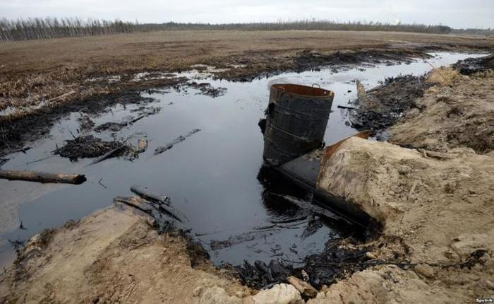
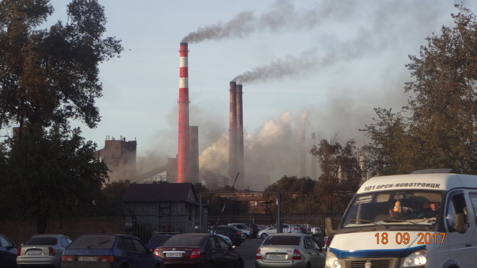
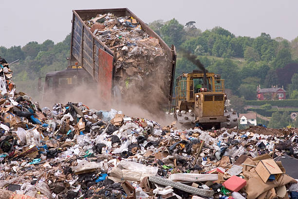
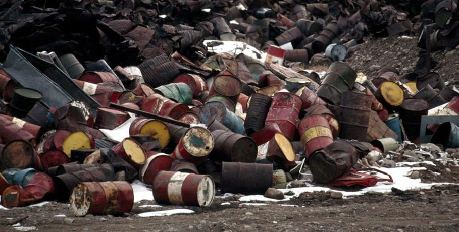

Водные ресурсы
Водные ресурсы области представлены поверхностными и подземными водами.
Поверхностные воды включают реки Урал, Сакмару, Илек, Орь, Самару,
Большой Кинель, 15 притоков длиной 100-200 км, 29 рек протяженностью
50-100 км, 513 рек – до 50 км.
Условно область разделена на бассейн реки Урал – 78,2 тыс. км2 (63%), бассейн реки Волга
– 38,2 тыс. км2 (2%), бассейн реки Тобол – 2,2 тыс. км2 (2%) и бессточную зону озер – 4,9 тыс.
км2 (4%). Основное питание рек бассейна (60-80% годового объема стока) идет за счет
талых снеговых вод. Дождевые осадки составляют 2-12%, подземные воды – 13-38% объема стока.
На территории области имеется 47 естественных озер площадью зеркала около 30 тыс. га,
среди которых небольшую площадь имеют бессточные озера на востоке области – Шелкар-Ега-Кара
(10 тыс. га), Жетыколь (3 тыс. га). Вода в озерах смешанного состава – от пресной
до солоноватой. В г.Соль-Илецке имеется известное озеро Развал с лечебными рассолами.
37 озер области намечается отнести к памятникам природы.
Значительный водный фон составляют 7 водохранилищ объемом более 10 млн. м3 и 139
водохранилищ объемом от 1 до 10 млн. м3, 212 прудов с объемами до 1 млн. м3.
Общий запас пресной воды в прудах и водохранилищах составляет до 4 км3.
Всего Оренбургская область располагает в среднем 12,6 км3 воды в год.
Регион промышленного Урала, в состав которого входит Оренбургская область,
располагает ограниченными водными ресурсами. На одного жителя области
приходится около 430 тыс. м3 воды, что значительно ниже средних
показателей по стране. Напряженный водохозяйственный баланс наблюдается
практически по всему бассейну, особенно там, где расположены
Орско-Новотроицкий, Медногорский, Гайско-Ириклинский промышленные узлы,
Оренбургский топливно-промышленный комплекс.
Река Урал – крупнейшая водная артерия области. Большая часть
стока приходится на период весеннего половодья, когда по реке проходит
70-80 % годового стока. Многолетний средний сток реки Урал в пределах Оренбургской
области составляет 10,9 км3 в год.
Качество воды в реке Урал на территории области соответствует 3 классу и оценивается
индексом загрязненности, изменяющимся по длине реки:
Пос. Березовский (фоновый створ для области) – 1,42;
г. Орск - 0,72-1,08;
г. Новотроицк – 1,12
г. Оренбург - 1,19-1,92
Основные загрязняющие вещества: нефтепродукты, фенолы.
Самые чистые реки бассейна реки Урал - Сакмара и Салмыш.
Загрязненность реки Самара от города Бузулука до города
Самары соответствует 3 классу качества и оценивается индексом загрязненности от 1,52 до 2,31.
Основными загрязнителями на всем протяжении реки являются медь и органические вещества.
Самая загрязненная река Блява, левобережный приток реки Сакмара, соответствует 7 классу качества
– «чрезвычайно грязная» - с ИЗВ – 34,67. Часто отмечают превышение ПДК по цинку, меди в десятки раз.
Основным источником водоснабжения в Оренбургской области являются подземные воды.
Вопросы учёта использования подземных вод и контроля за их состоянием являются в настоящее
время весьма актуальными и находят своё отражение в системе мониторинга геологической среды.
В области сосредоточено 6,263 млн. м3/сут. потенциальных эксплуатационных ресурсов
подземных вод, из них 86%, то есть 5,376 млн. м3/сут., - пресные воды. Модуль
общих прогнозных (потенциальных) эксплуатационных ресурсов в целом для
области составляет 0,59 л/с/км2, изменяясь по площади от 0,12 (Светлинский район)
до 1,34-1,68 (Новоорский, Оренбургский районы).
На базе эксплуатационных ресурсов в области разведано 125 месторождений подземных вод.
Как правило, качество вод месторождений с утвержденными запасами на момент
разведки соответствует требованиям ГОСТов или при отклонении по отдельным компонентам
может быть улучшено до требуемой кондиции в процессе водоподготовки при
отсутствии альтернативных источников водоснабжения лучшего качества.
Общие разведанные запасы по области составляют 1968,3 тыс.м3/сут., из них
подготовлено к эксплуатации 1363,7 тыс.м3/сут. В эксплуатации находится
51 месторождение, или 40 % от разведанных месторождений. Осваиваются в
основном месторождения с запасами, утвержденными в Государственной комиссии
по запасам (75 %) и территориальной комиссии по запасам (50 %). Из 82
месторождений, принятых научнотехническим советом, эксплуатируется 26.
Основная причина не освоения - удаленность от потребителя.
Обеспечение ресурсами подземных вод для питьевого водоснабжения является
проблемой для Первомайского, Домбаровского и Светлинского районов области.
В 2000 году в области извлечено 277,8 млн. м3 подземных вод, в Республику
Казахстан передано 0,04 млн.м3. Доля подземных вод в хозяйственно-питьевом
водопотреблении составляет 91,5% от общего использования водных ресурсов.
Использование подземных вод составило 259,5 млн. м3/год, в том числе на
хозяйственно-питьевое водоснабжение - 205,3 млн. м3, на производственно-техническое
- 49,3 млн. м3, на орошение земель и обводнение пастбищ - 4,9 млн.м3.
В целом водоотбор подземных вод по всей территории области невысокий.
Максимальное значение водоотбора (29,8-41,3%) фиксируется в развитых
промышленных районах: Орском, Новотроицком, Оренбургском.
Потери воды при транспортировке в целом по области в 2000 году составили
31,88 млн. м3 за счет потерь в жилищно-коммунальном хозяйстве.
Анализ гидродинамического режима показал, что истощения запасов подземных
вод ни на одном водозаборе не произошло. Гидрохимическая обстановка на
водозаборах довольно сложная. На 22 водозаборах отмечается загрязнение
подземных вод, которое чаще всего связано либо с подтягиванием солоноватых
вод нижележащего водоносного комплекса, либо с загрязнением со стороны
неканализированных поселков или промышленных и сельскохозяйственных
предприятий. Необходимо отметить, что основная масса запасов приурочена
к аллювиальным отложениям долин рек Урал, Сакмара, Самара. Подземные
воды относятся к недостаточно защищенным и качество их в той или иной
степени неразрывно связано с качеством поверхностных вод речных долин.
Немалую роль в загрязнений подземных вод играют коммунальное хозяйство
и агропромышленный комплекс. Но наибольшее влияние оказывают объекты
газовой, нефтедобывающей, нефтеперерабатывающей, горнодобывающей,
металлургической и химической промышленности.
Основными загрязняющими веществами являются нефть, нефтепродукты
и отходы их переработки, фенолы, соли тяжелых металлов, по степени
опасности, относящиеся ко 2-4 классу.
На территории области имеются разведанные запасы минеральных вод
(города Орербург, Бугуруслан, Орск, пос.Ташла и др.). В области имеется курорт
с собственной гидроминеральной базой - “Гай”.
На территории области установлены как минимум 34 очага загрязнения,
связанных с деятельностью промышленных, сельскохозяйственных и коммунальных
объектов. Причинами загрязнения часто являются несоблюдение режимов зон
санитарной охраны, невыполнение водопользователями основных мероприятий.
Из-за отсутствия зон санитарной охраны не отвечает требованиям каждый пятый
водозабор области.
Появившиеся тенденции загрязнения требуют принятия мер по их прекращению,
повышения требовательности к природопользователям, продолжения работ по
мониторингу геологической среды, требуется также завершение ревизии режимных
сетей на территории области, источников антропогенного, техногенного загрязнения,
полигонов захоронения отходов, свалок, шламонакопителей.
Другим направлением улучшения водоснабжения и поддержания качества подземных
вод является квалифицированная эксплуатация месторождений и водозаборов.
В ряде случаев требуется сооружение станций по очистке подаваемой в разводящие
сети воды (города Бузулук, Новотроицк).
Ухудшение качества подаваемой воды происходит зачастую в водопроводных
системах. 24,5% систем водоснабжения не отвечают санитарным требованиям,
что увеличивает процент некондиционных проб по микробиологическим показателям.
Выполнение мероприятий вышеназванных программ улучшит качество питьевой воды
и здоровье населения области, но необходимо отметить, что выполняются они
крайне медленно из-за недостаточного финансирования.Общий объём сброса сточных вод в 2000 году

составил 1689,04 млн.м3, при этом
безвозвратное водопотребление – 252,89 млн. м3. Значительным фактором ухудшающим экологи- ческую обстановку области является
сброс бытовых и производственных сточных вод в поверхностные водные объекты.287 т фосфора,
52,7 т нефтепродуктов, 2,37 т взвешенных частиц, 47,3 т СПАВ,
960,33 т общего азота и 556,91 т азота аммония , 5,46 т магния, 43,2 т железа,
7,44 т цинка, 0,85 т меди, 0,01 т мышьяка, 0,205 т фенолов.
Из 39 городов и райцентров области лишь 16 имеют сооружения по очистке
сточных вод. Область нуждается в дополнительном строительстве 32 систем
очистки суммарной мощностью 408 тыс. м2 в сутки.
Атмосферный воздух
Южноуральская горноперерабатывающая компания,
Медногорский медно-серный комбинат,
газоперерабатывающий и гелиевый заводы – перечень
подобных объектов, функционирующих на территории Оренбуржья,
может быть длинным, однако и его начала достаточно,
чтобы представить, насколько в связи с такой
промышленностью обостряется экологическая ситуация.
Сильно загрязняют воздушный бассейн Каргалинская
и Сакмарская ТЭЦ (их суммарная доля загрязнения более 7%).
Если сравнивать по годам, то в конце 90-х – начале 2000-х
количество вредных выбросов сократилось более чем на 60%,
что, к сожалению, объясняется не улучшением технологий, а
спадом в промышленном производстве.

Но при этом увеличилось количество личного автомобильного транспорта
среди которого никак не электромобили, а привычные для нас машины
– по сути, передвижные источники СО2.
Морально и физически устаревшее оборудование
на заводах приводит к постоянным неполадкам, к
аварийным выбросам в атмосферный воздух вредных газов,
веществ. Наглядным примером является авария, произошедшая
более 10 лет назад на Гелиевом заводе, который
расположен недалеко от областного центра.

Почвы
Упомянутая промышленность наносит вред не только воздуху
но и земельным ресурсам. Предприятия химической и металлургической
индустрии загрязняют почвы тяжелыми металлами, неудовлетворительная
их концентрация наблюдается в Кувандыкском, Медногорском
промышленных районах.В сельском хозяйстве также не соблюдаются
экологические нормы.Чрезмерная распахан- ность земель вызывает
деградацию почв, снижается их способность к само- восстановлению.
Одни недобросовестные предприниматели используют запрещенные
агрохимикаты, другие не соблюдают правила хранения и использования
разрешенных удобрений.По результатам обследований необходимо
произвести восстановление деградированных и загрязненных земель
на площади 75 км2, в число которых входят 15 км2 селитебных территорий.
.
Образование, использование, обезвреживание и хранение токсичных отходов на территории Оренбургской области
Концентрация промышленного производства и сложившаяся на
территории области ситуация в сфере образования,
использования, обеззараживания, хранения и захоронения
отходов привела к снижению качества окружающей природной
среды, нерациональному использованию природных ресурсов,
значительному экономическому ущербу и представляет реальную угрозу
здоровью населения области.
Несмотря на общее снижение объемов промышленного производства,
в области сохраняется тенденция к увеличению объемов образования
отходов производства и потребления. Особую тревогу вызывает
накопление отходов, содержащих токсичные вещества.
В 1999 году на предприятиях области образовалось 9382 тыс. тонн
токсичных отходов. Использовано в собственном производстве
и обезврежено на предприятиях 21,8 % от общего объема
образовавшихся за 1999 год токсичных отходов.
Отходы, которые не используются и не перерабатываются
на предприятиях, направляются в места хранения и захоронения.
В места организованного хранения, принадлежащие предприятиям,
в 1999 году было направлено 6517,6 тыс. тонн токсичных отходов,
в местазахоронения - 5,9 тыс. тонн
(соответственно 69,5 % и 0,1 % от объема образовавшихся за год отходов).
Основная масса отходов была размещена в местах захоронения на
предприятиях топливной промышленности (41,2%), электроэнергетики (21,5%), транспорта (16,7%).
Неиспользуемые отходы - это миллионы тонн выведенных из хозяйственного оборота безвозвратно
теряемых материальных ресурсов.
По объему накопленных отходов область занимает второе место в
Уральском экономическом районе. На конец 1999 года в хранилищах,
на полигонах, свалках и других объектах накоплено 188,06 млн. тонн
токсичных отходов производства, в том числе I класса опасности-2,75,
II класса опасности-0,21, 111 класса опасности-0,11, IV класса опасности -184,99.
Основной объем накопленных отходов сосредоточен в ОАО “Оренбургасбест” г.Ясного
(48,2 %), ОАО “Гайский ГОК” г.Гая (32,4 %), ОАО “Носта” (ОХМК) и ОАО
“НЗХС” г.Новотроицка (17,4%) (табл.8).
Экологические платежи предприятий за размещение отходов в 1999 году составили
5,0 млн. рублей. В общем объеме платежей за размещение отходов 32,7%
приходилось на предприятия машиностроения, 22,3% - промышленности стройматериалов,
27,9% - жилищно-коммунального хозяйства.
Инвентаризацией отходов, проведенной в соответствии с распоряжением
главы администрации области от 16.12.93 № 1009-р, установлено,
что на территории области ежегодно образуется 39,5 млн. тонн отходов,
в том числе 9,7 млн. тонн токсичных. Из общего количества образующихся
отходов используется около 10 %, обезвреживается 2 %. Всего складировано
и захоронено 1,4 млрд. тонн отходов. Полигоны и свалки отходов размещены
в 1410 местах (из 843 разрешенных) и занимают площадь в 9811 гектаров.
В области ежегодно образуются твердые бытовые отходы в объеме
около 1,15 млн. тонн, в том числе в сельской местности - 0,9 млн. тонн.
В 2000 году на 53 предприятиях области по статистическим данным образовалось
9,202 млн. тонн токсичных отходов, в том числе 1 класса опасности – 0,129
млн. тонн, 2 класса опасности – 5,4 тыс. тонн , 3 класса опасности – 3,0 тыс.
тонн, 4 класса опасности – 9,065 млн. тонн.
